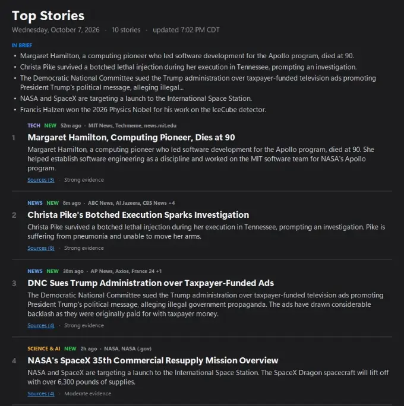

One story per event.
Ten reports about the same thing become one story, with every source listed underneath. When the app is unsure whether two reports describe the same event, it keeps them apart.
AGENT REACH DAILY · FOR WINDOWS
Agent Reach Daily reads 10 news sources every day, puts the reports of one event into one story, and writes a short summary of each, checked against its sources. The AI runs on your computer. No account, no subscription, no cloud AI.
Release candidate 12 · Windows 10/11 · open source (MIT License)

One real refresh on October 7, 2026, on a PC with an NVIDIA RTX 4070 Super. Without a graphics card it takes longer.
A REAL EDITION
Five stories from the October 7, 2026 edition, exactly as the app wrote them. Each story brings the reports of one event together; the sources link to the original publishers.
The app writes each edition on its own; nobody edits it before it appears. The stories in this sample were checked for correct grouping before they went on this site.
EVERY DAY
A new edition is ready once a day, made in the background. Open the app and read.
Ten reports about the same thing become one story, with every source listed underneath. When the app is unsure whether two reports describe the same event, it keeps them apart.
Every sentence must be backed by the story’s own sources. Anything the sources do not say is left out, and each story shows how many independent outlets reported it.
Ten top stories, then News, Tech, Science & AI, Sports, Entertainment and Internet Culture. Stale articles, adverts and repeats are filtered out.
Each edition marks what is new or growing since the last one. Follow the topics you care about and mute the ones you don’t.
The top eight stories are read aloud by your Windows voice: about five minutes, ready when the edition is.
Thirty days of editions stay on your PC, searchable. Export any edition as a single web page to read anywhere or share.
HOW AN EDITION IS MADE
Five steps, all on your PC. The AI writes the words; it never decides which reports belong together.
Runs on Ollama with llama3.1:8b (writing) and nomic-embed-text (grouping). Both are free and run offline once downloaded; only the news itself comes from the internet.
PRIVATE BY DESIGN
Nothing to sign up for. The app has no server of its own.
No analytics or telemetry. What you read and follow stays on your computer.
Summaries are written by a model on your own PC, not sent to an AI service.
If a refresh fails or finds too little, you keep yesterday’s edition and the app says why.
GET STARTED
For people comfortable running one command in PowerShell. A one-click installer is not ready yet.
powershell -ExecutionPolicy Bypass -File .\Setup-AgentReachDaily.ps1 -PullModels -RegisterTaskWHERE IT STANDS
The app works end to end and is tested every release on a real Windows PC: refreshes, cancelling, the AI stopping mid-way, the podcast, and the window.
Two editions an hour apart do not always recognise the same story, and the “why it matters” notes are often left out because they fail the source check.
Stable stories from one day to the next, then optional research briefs that check a top story against more sources.
Built by Michael Brown with Claude Code as a development tool. The app itself runs on local Ollama models. This does not imply endorsement by Anthropic.
FOUNDER & CONTACT
Michael Brown · Founder
Agent Reach began with a practical goal: read less, understand more, and always be able to see where a fact came from.